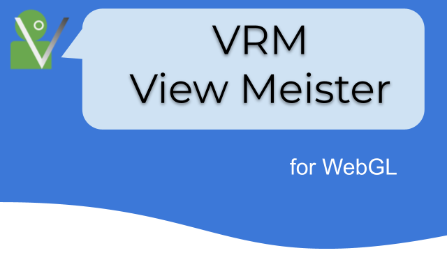

Welcome to VRMViewMeister’s documentation!
Pose and animation of VRoid (VRM), which can be done with a web app!
table of contents:
- 1. Introduction
- 2. Prerequisites for Use
- 3. Operating environment
- 4. How to install
- 5. Feature
- 6. Screen configuration
- 6.1. Main screen
- 6.2. About this app
- 6.3. WebGL screen
- 6.4. App settings
- 6.5. VRM information screen
- 6.6. Project setting screen
- 6.7. Screenshot
- 6.8. Pose/Motion list
- 6.9. Repositioning of IK markers
- 6.10. gravity settings
- 6.11. pose tracking
- 6.12. Video player
- 6.13. Menu structure
- 6.14. Object list
- 6.15. Property list
- 6.16. Timeline
- 6.17. Keyframe registration window
- 6.18. Setting keyframes
- 6.19. Internal storage dialog
- 6.20. v-pad (virtual control pad)
- 6.21. Navigation
- 6.22. Position and rotation reference
- 7. General usage
- 8. Usable object
- 9. Property list
- 10. Manipulating Objects
- 11. Pose and Motion
- 12. Animation
- 13. Project settings
- 14. Special operation
- 15. Screenshot
- 16. Video
- 17. Edit Subtitles
- 18. VR and AR
- 19. Setting
- 20. Support for cloud storage
- 21. VRoid Hub
- 22. Others